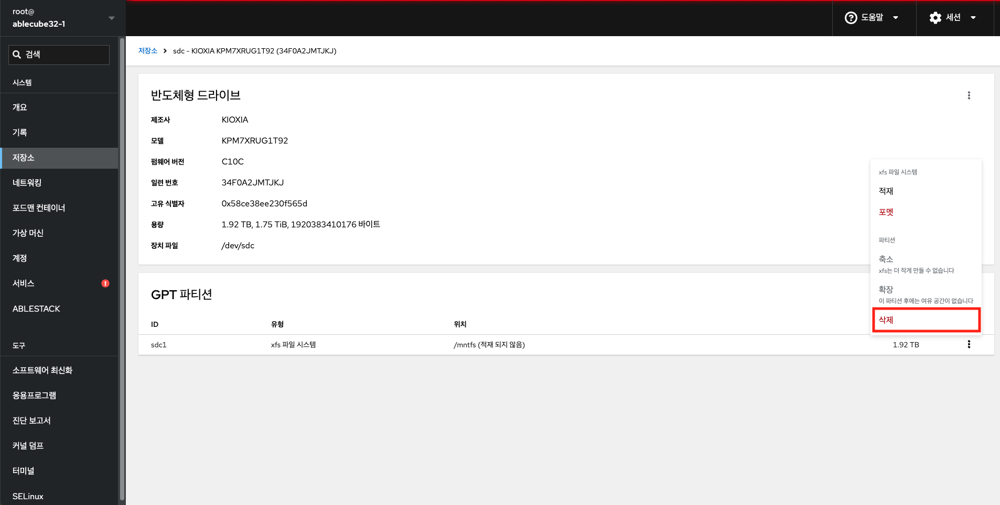

저장소¶
Cube 웹 콘솔의 저장소메뉴는 파일 시스템을 관리하는 기능을 제공합니다.
파티션 관리¶
파일 시스템 섹션에서 파일 시스템으로 포맷된 모든 사용 가능한 파티션, 파일 시스템의 이름, 크기 및 각 파티션에서 사용 가능한 공간 사이즈를 확인합니다.
{kind=link}
파티션 생성¶
Warning
디스크 초기화 작업시 데이터 손실이 없도록 신중히 작업하여야 합니다.
파티션을 생성하려면 :
{kind=link}
- 저장소에서 파티션을 생성하려는 볼륨을 클릭합니다.
{kind=link}
- 파티션 테이블 만들기 버튼을 클릭합니다.
{kind=link}
- 파티션 타입을 선택햅니다.
- 덮어쓰기 여부를 선택합니다.
- 초기화 를 클릭합니다.
{kind=link}
- 파티션 만들기 버튼을 클릭합니다.
{kind=link}
- 이름 을 입력합니다.
- 적재 지점 필드에 마운트 경로를 입력합니다.
- 유형 드롭 다운 메뉴에서 파일 시스템을 선택합니다
- XFS 파일 시스템은 대용량 논리 볼륨을 지원하고, 운영 중단 없이 물리적 드라이브를 온라인으로 전환하며, 기존 파일 시스템을 확장할 수 있습니다.
다른 강력한 기본 설정이 없는 경우 이 파일 시스템을 선택한 상태로 둡니다. - ext4 파일 시스템은 다음을 지원합니다.
- 논리 볼륨
- 중단없이 온라인으로 물리 드라이브 전환
- 파일 시스템 확장
- 파일 시스템 축소
- XFS 파일 시스템은 대용량 논리 볼륨을 지원하고, 운영 중단 없이 물리적 드라이브를 온라인으로 전환하며, 기존 파일 시스템을 확장할 수 있습니다.
- 파티션 생성 대화 상자에서 새 파티션의 크기를 선택합니다.
- 덮어쓰기 옵션을 선택합니다.
- 기존 자료를 덮어쓰지 않습니다(디스크 헤더만 다시 작성합니다. 이 옵션의 장점은 포맷 속도입니다.)
- 기존 데이터를 제로로 덮어쓰기(전체 디스크를 0으로 다시 씁니다. 이 옵션은 프로그램이 전체 디스크를 통과해야하므로 속도가 느리지만 보안성은 더 높습니다. 디스크에 데이터가 포함되어 있고 덮어쓰려면 이 옵션을 사용합니다.)
- 암호화 옵션을 선택합니다.
- 부팅 옵션을 선택합니다.
- 적재 옵션 을 선택합니다.
- 생성과 적재 버튼을 클릭하여 파티션을 생성합니다.
{kind=link}
- 포맷은 볼륨 크기 및 선택한 포맷 옵션에 따라 몇 분 정도 걸릴 수 있습니다.
- 포맷이 성공적으로 완료되면 파일 시스템 섹션에서 포맷된 논리 볼륨의 세부 정보를 확인할 수 있습니다.
파티션 삭제¶
Info
- 전제 조건 : 파티션의 파일 시스템을 마운트 해제합니다.
파티션을 생성하려면 :

{kind=link}
- 파티션 섹션에서 삭제 버튼을 클릭합니다.
{kind=link}
- 삭제 버튼을 클릭합니다.
{kind=link}
- 파티션이 성공적으로 제거되었는지 확인하려면 컨텐츠 섹션에서 확인할 수 있습니다.
파일 시스템 마운트¶
파티션을 사용하려면 파티션을 파일 시스템을 장치로 마운트해야 합니다.
파일 시스템을 마운트 하려면 :
{kind=link}
- 마운트하려는 파일 시스템의 적재 버튼을 클릭합니다.
{kind=link}
- 적재 지점 을 입력합니다.
- 적재 옵션 을 선택합니다.
- 부팅 옵션을 선택합니다.
- 적재 버튼 클릭합니다.
마운트 해제¶
파일 시스템 마운트 해제 하려면 :
{kind=link}
- 적재 해제 버튼을 클릭하여 파일시스템 적재 해제 팝업을 호출합니다.
{kind=link}
- 적재 해제 버튼을 클릭하여 적재 해재합니다.
NFS 마운트 관리¶
NFS를 사용하면 네트워크에 있는 원격 디렉토리를 마운트할 수 있으며 디렉토리가 실제 드라이브에 있는 것처럼 파일에 대해 작업할 수 있습니다.
신규 NFS 적재¶
NFS 마운트를 연결하려면 :
{kind=link}
- 신규 NFS 적재 을 클릭 합니다.
{kind=link}
- 신규 NFS 적재 대화 상자에서 원격 서버의 서버 주소 또는 IP를 입력합니다.
- 서버상의 경로 필드에 탑재할 디렉토리의 경로를 입력합니다.
- 로컬 마운트 지점 필드에 로컬 시스템에서 디렉토리를 찾을 경로를 입력합니다.
- 재시작 시 적재를 선택합니다. 이렇게 하면 로컬 시스템을 다시 시작한 후에도 디렉토리에 연결할 수 있습니다.
- 추가 를 클릭합니다.
NFS 적재 해제¶
NFS 마운트 적재 해제하려면 :
{kind=link}
- 적재 해제 버튼을 클릭하여 마운트 해제합니다.
NFS 편집¶
NFS 마운트 정보를 편집하려면 :
{kind=link}
- 편집 버튼을 클릭하여 NFS 적제 편집 팝업을 호출합니다.
{kind=link}
- NFS 적재 대화 상자에서 원격 서버의 서버 주소 또는 IP를 입력합니다.
- 서버상의 경로 필드에 탑재할 디렉토리의 경로를 입력합니다.
- 로컬 마운트 지점 필드에 로컬 시스템에서 디렉토리를 찾을 경로를 입력합니다.
- 재시작 시 적재를 선택합니다. 이렇게 하면 로컬 시스템을 다시 시작한 후에도 디렉토리에 연결할 수 있습니다.
- 저장 을 클릭합니다.
NFS 제거¶
NFS를 제거하려면 :
{kind=link}
- 삭제 버튼을 클릭하여 NFS를 제거합니다.
iSCSI 마운트 관리¶
iSCSI 로 연결된 볼륨을 추가하여 스토리지로 사용할 수 있습니다.
신규 iSCSI 마운트 적재¶
{kind=link}
- iSCSI 포털 추가 를 클릭합니다.
{kind=link}
- 저장소 주소와 ID, 패스워드를 입력합니다.
{kind=link}
- 디스크를 추가합니다.
독립 디스크 중복 관리¶
RAID(Redundant Arrays of Independent Disks)는 더 많은 Disk를 하나의 스토리지로 정렬하는 방법을 나타냅니다. RAID는 Disk에 저장된 데이터를 Disk 장애로부터 보호합니다.
RAID는 다음과 같은 데이터 배포 전략을 사용합니다.
- 미러링 - 데이터가 서로 다른 두 위치에 복사됩니다. 디스크 하나에 장애가 발생하면 사본이 있고 데이터는 손실되지 않습니다.
- 스트라이핑 — 데이터가 디스크 간에 고르게 분산됩니다.
보호 수준은 RAID 수준에 따라 다릅니다.
Cube 웹 콘솔은 다음과 같은 RAID 수준을 지원합니다.
- RAID 0(스트라이프)
- RAID 1(미러)
- RAID 4(전용 패리티)
- RAID 5(분산 패리티)
- RAID 6(이중 분산 패리티)
- RAID 10(미러 스트라이프)
RAID에서 디스크를 사용하려면 먼저 다음을 수행해야 합니다.
RAID를 생성합니다. 파일 시스템으로 포맷합니다. 서버에 RAID를 마운트합니다.
RAID 생성¶
시스템에 연결된 실제 디스크입니다. 각 RAID 수준에는 서로 다른 양의 디스크가 필요합니다.
RAID 생성하려면 :
{kind=link}
- MD레이드 장치 만들기 버튼을 클릭합니다.
{kind=link}
- 레이드 장치 만들기 대화 상자에 새 RAID의 이름을 입력합니다.
- RAID 수준 드롭다운 목록에서 사용할 RAID 수준을 선택합니다.
- 청크 크기 드롭다운 목록에서 미리 정의된 값을 그대로 둡니다.
- Chunk 크기 값은 데이터 쓰기에 사용할 각 블록의 크기를 지정합니다. Chunk 크기가 512KiB이면 시스템이 첫 번째 디스크에 첫 번째 512KiB를 쓰고, 두 번째 512KiB는 두 번째 디스크에 쓰이고, 세 번째 Chunk는 세 번째 디스크에 쓰입니다. RAID에 디스크가 3개 있는 경우, 네 번째 512KiB가 첫 번째 디스크에 다시 기록됩니다.
- RAID에 사용할 디스크를 선택하십시오.
- 생성 을 클릭합니다.
장치 섹션에서 새 RAID를 확인하고 포맷할 수 있습니다.
RAID 포멧¶
생성된 새 소프트웨어 RAID 장치 포맷합니다.
Warning
초기화하면 저장장치에서 모든 자료가 제거됩니다.
RAID 포멧하려면 :
{kind=link}
- 포맷할 RAID에서 포멧 버튼을 클릭합니다.
{kind=link}
- 이름 을 입력합니다.
- 적재 지점 필드에 마운트 경로를 입력합니다.
- 유형 드롭 다운 메뉴에서 파일 시스템을 선택합니다
- XFS 파일 시스템은 대용량 논리 볼륨을 지원하고, 운영 중단 없이 물리적 드라이브를 온라인으로 전환하며, 기존 파일 시스템을 확장할 수 있습니다.
다른 강력한 기본 설정이 없는 경우 이 파일 시스템을 선택한 상태로 둡니다. - ext4 파일 시스템은 다음을 지원합니다.
- 논리 볼륨
- 중단없이 온라인으로 물리 드라이브 전환
- 파일 시스템 확장
- 파일 시스템 축소
- XFS 파일 시스템은 대용량 논리 볼륨을 지원하고, 운영 중단 없이 물리적 드라이브를 온라인으로 전환하며, 기존 파일 시스템을 확장할 수 있습니다.
- 덮어쓰기 옵션을 선택합니다.
- 기존 자료를 덮어쓰지 않습니다(디스크 헤더만 다시 작성합니다. 이 옵션의 장점은 포맷 속도입니다.)
- 기존 데이터를 제로로 덮어쓰기(전체 디스크를 0으로 다시 씁니다. 이 옵션은 프로그램이 전체 디스크를 통과해야하므로 속도가 느리지만 보안성은 더 높습니다. 디스크에 데이터가 포함되어 있고 덮어쓰려면 이 옵션을 사용합니다.)
- 암호화 옵션을 선택합니다.
- 부팅 옵션을 선택합니다.
- 적재 옵션 을 선택합니다.
- 초기화 및 적재 버튼을 클릭합니다.
RAID 파티션 테이블 생성¶
생성된 새 소프트웨어 RAID 장치의 파티션 테이블을 사용하여 RAID를 포맷합니다.
RAID를 사용하려면 다른 스토리지 디바이스와 같은 포맷이 필요합니다. 두 가지 옵션이 있습니다.
- 파티션 없이 RAID 장치 포맷
- 파티션이 있는 파티션 테이블 만들기
RAID 파티션 테이블 생성하려면 :
{kind=link}
- 파티션 생성할 RAID에 파티션 테이블 만들기 버튼클 클릭합니다.
{kind=link}
- 파티션 타입을 선택합니다.
- 덮어쓰기 옵션을 선택합니다.
- 기존 자료를 덮어쓰지 않습니다(디스크 헤더만 다시 작성합니다. 이 옵션의 장점은 포맷 속도입니다.)
- 기존 데이터를 제로로 덮어쓰기(전체 디스크를 0으로 다시 씁니다. 이 옵션은 프로그램이 전체 디스크를 통과해야하므로 속도가 느리지만 보안성은 더 높습니다. 디스크에 데이터가 포함되어 있고 덮어쓰려면 이 옵션을 사용합니다.)
- 초기화합니다 버튼을 클릭합니다.
이때 파티션 테이블이 생성되어 파티션을 만들 수 있습니다.
RAID에 파티션 생성¶
기존 파티션 테이블에 파티션을 생성합니다.
RAID에 파티션을 생성하려면 :
{kind=link}
- 파티션 만들기를 클릭하세요.
{kind=link}
- 이름 을 입력합니다.
- 적재 지점 필드에 마운트 경로를 입력합니다.
- 유형 드롭 다운 메뉴에서 파일 시스템을 선택합니다
- XFS 파일 시스템은 대용량 논리 볼륨을 지원하고, 운영 중단 없이 물리적 드라이브를 온라인으로 전환하며, 기존 파일 시스템을 확장할 수 있습니다.
다른 강력한 기본 설정이 없는 경우 이 파일 시스템을 선택한 상태로 둡니다. - ext4 파일 시스템은 다음을 지원합니다.
- 논리 볼륨
- 중단없이 온라인으로 물리 드라이브 전환
- 파일 시스템 확장
- 파일 시스템 축소
- XFS 파일 시스템은 대용량 논리 볼륨을 지원하고, 운영 중단 없이 물리적 드라이브를 온라인으로 전환하며, 기존 파일 시스템을 확장할 수 있습니다.
- 크기 를 입력합니다.
- 덮어쓰기 옵션을 선택합니다.
- 기존 자료를 덮어쓰지 않습니다(디스크 헤더만 다시 작성합니다. 이 옵션의 장점은 포맷 속도입니다.)
- 기존 데이터를 제로로 덮어쓰기(전체 디스크를 0으로 다시 씁니다. 이 옵션은 프로그램이 전체 디스크를 통과해야하므로 속도가 느리지만 보안성은 더 높습니다. 디스크에 데이터가 포함되어 있고 덮어쓰려면 이 옵션을 사용합니다.)
- 압호화 옵션을 선택합니다.
- 부팅 옵션을 선택합니다.
- 적재 옵션 을 선택합니다.
- 생성과 적재 버튼을 클릭합니다.
사용되는 포맷 옵션 및 RAID 크기에 따라 포맷에 몇 분 정도 걸릴 수 있습니다.
완료 후 다른 파티션 만들기를 계속할 수 있습니다.
이 때 시스템은 마운트되고 포맷된 RAID를 사용합니다.
RAID 삭제¶
raid를 삭제하려면 :
{kind=link}
- 삭제 버튼을 클릭하여 raid 제거 팝업을 호출합니다.
{kind=link}
- 삭제 버튼을 클릭하여 raid를 영구히 삭제합니다.
LVM 논리 볼륨 구성¶
Cube웹 콘솔은 LVM 볼륨 그룹 및 논리적 볼륨을 생성하기 위한 그래픽 인터페이스를 제공합니다.
논리 볼륨 관리¶
볼륨 그룹은 물리적 볼륨과 논리적 볼륨 사이에 계층을 생성합니다. 이를 통해 논리적 볼륨 자체에 영향을 미치지 않고 물리적 볼륨을 추가하거나 제거할 수 있습니다. 볼륨 그룹은 그룹에 포함된 모든 물리적 드라이브의 용량으로 구성된 용량을 가진 하나의 드라이브로 나타납니다.
물리적 드라이브를 웹 콘솔의 볼륨 그룹에 결합할 수 있습니다.
논리 볼륨은 단일 물리적 드라이브 역할을 하며 시스템의 볼륨 그룹 위에 구축됩니다.
논리 볼륨의 주요 이점은 다음과 같습니다.
- 물리적 드라이브에 사용된 파티션 시스템보다 뛰어난 유연성
- 더 많은 물리적 드라이브를 하나의 볼륨에 연결할 수 있습니다.
- 재시작하지 않고 온라인으로 볼륨 용량을 확장(증가)하거나 축소(축소)할 수 있습니다.
- 스냅샷을 생성할 수 있습니다.
볼륨 그룹 생성¶
하나 이상의 물리적 드라이브 또는 다른 스토리지 장치에서 볼륨 그룹을 생성합니다.
논리 볼륨은 볼륨 그룹에서 생성됩니다. 각 볼륨 그룹에는 여러 논리 볼륨이 포함될 수 있습니다.
볼륨 그룹을 생성하려면 :
{kind=link}
- 저장소 섹션에서 LVM2 볼륨 그룹 만들기 버튼을 클릭합니다.
{kind=link}
- 이름 필드에 공백이 없는 그룹의 이름을 입력합니다.
-
볼륨 그룹을 생성하기 위해 결합할 드라이브를 선택합니다.
-
예상대로 장치를 볼 수 없을 수도 있습니다. Rocky 웹 콘솔에는 사용하지 않는 블록 장치만 표시됩니다. 사용된 장치는 예를 들어 다음을 의미합니다.
- 파일 시스템으로 포맷된 장치
- 다른 볼륨 그룹의 물리적 볼륨
- 물리적 볼륨이 다른 소프트웨어 RAID 장치의 멤버
장치가 보이지 않으면 비어 있고 사용되지 않도록 포맷하십시오.
-
생성 버튼을 클릭합니다.
{kind=link}
- 웹 콘솔은 볼륨 그룹 섹션에 볼륨 그룹을 추가합니다. 그룹을 클릭한 후 해당 볼륨 그룹에서 할당된 논리 볼륨을 생성할 수 있습니다.
논리 볼륨 생성¶
논리 볼륨을 생성하려면 :
{kind=link}
- 신규 논리 볼륨 만들기 를 클릭합니다.
{kind=link}
- 이름 필드에 공백 없이 새 논리 볼륨의 이름을 입력합니다.
- 목적 드롭다운 메뉴에서 파일 시스템의 블록 장치를 선택합니다.
이 구성을 사용하면 볼륨 그룹에 포함된 모든 드라이브의 용량 합계에 해당하는 최대 볼륨 크기를 가진 논리 볼륨을 생성할 수 있습니다. -
논리 볼륨의 크기를 정의합니다. 고려 사항:
- 이 논리 볼륨을 사용하는 시스템에 필요한 공간입니다.
- 생성할 논리적 볼륨 수입니다.
-
전체 공간을 사용할 필요는 없습니다. 필요한 경우 나중에 논리 볼륨을 확장할 수 있습니다.
- 생성 버튼을 클릭합니다.
이 단계에서 논리 볼륨이 생성되었으며 포맷 프로세스를 사용하여 파일 시스템을 생성하고 마운트해야 합니다.
논리 볼륨 포멧¶
논리 볼륨은 물리적 드라이브 역할을 합니다. 파일을 사용하려면 파일 시스템으로 포맷해야 합니다.
Warning
논리 볼륨을 포맷하면 볼륨의 모든 데이터가 삭제됩니다.
선택한 파일 시스템에 따라 논리 볼륨에 사용할 수 있는 구성 매개 변수가 결정됩니다.
예를 들어 일부 XFS 파일 시스템은 볼륨 축소를 지원하지 않습니다. 자세한 내용은 웹 콘솔에서 논리 볼륨 크기 조정을 참조하십시오.
논리 볼륨을 포멧하려면 :
{kind=link}
- 포멧 버튼을 클릭합니다.
{kind=link}
- **이름**을 입력합니다.
- 적재 지점 필드에 마운트 경로를 입력합니다.
- 유형 드롭 다운 메뉴에서 파일 시스템을 선택합니다
- XFS 파일 시스템은 대용량 논리 볼륨을 지원하고, 운영 중단 없이 물리적 드라이브를 온라인으로 전환하며, 기존 파일 시스템을 확장할 수 있습니다.
다른 강력한 기본 설정이 없는 경우 이 파일 시스템을 선택한 상태로 둡니다. - ext4 파일 시스템은 다음을 지원합니다.
- 논리 볼륨
- 중단없이 온라인으로 물리 드라이브 전환
- 파일 시스템 확장
- 파일 시스템 축소
- XFS 파일 시스템은 대용량 논리 볼륨을 지원하고, 운영 중단 없이 물리적 드라이브를 온라인으로 전환하며, 기존 파일 시스템을 확장할 수 있습니다.
- 덮어쓰기 옵션을 선택합니다.
- 기존 자료를 덮어쓰지 않습니다(디스크 헤더만 다시 작성합니다. 이 옵션의 장점은 포맷 속도입니다.)
- 기존 데이터를 제로로 덮어쓰기(전체 디스크를 0으로 다시 씁니다. 이 옵션은 프로그램이 전체 디스크를 통과해야하므로 속도가 느리지만 보안성은 더 높습니다. 디스크에 데이터가 포함되어 있고 덮어쓰려면 이 옵션을 사용합니다.)
- 암호화 를 선택합니다.
- 부팅 옵션을 선택합니다.
- 적재 옵션 을 선택합니다.
- 초기화 및 적재 버튼을 클릭합니다.
논리 볼륨 리사이즈¶
논리 볼륨의 크기를 조정할 수 있는지 여부는 사용 중인 파일 시스템에 따라 다릅니다. 대부분의 파일 시스템을 사용하면 중단 없이 온라인으로 볼륨을 확장(확대)할 수 있습니다.
또한 논리 볼륨에 축소를 지원하는 파일 시스템이 포함된 경우 논리 볼륨의 크기를 줄이거나 축소할 수 있습니다. 예를 들어 ext3/ext4 파일 시스템에서 사용할 수 있어야 합니다.
Warning
GFS2 또는 XFS 파일 시스템이 포함된 볼륨은 줄일 수 없습니다.
논리 볼륨을 축소하려면 :
{kind=link}
- 축소 버튼을 클릭하여 논리 볼륨 축소 팝업을 호출합니다.
{kind=link}
- 크기 를 변경합니다.
- 축소 버튼을 클릭하여 논리 볼륨을 축소합니다.
논리 볼륨을 확장하려면 :
{kind=link}
- 확장 버튼을 클릭하여 논리 볼륨 확장 팝업을 호출합니다.
{kind=link}
- 크기 를 변경합니다.
- 확장 버튼을 클릭하여 논리 볼륨을 확장합니다.
thin 논리 볼륨 구성¶
씬 프로비저닝된 논리 볼륨을 사용하면 실제 논리 볼륨에 포함된 공간보다 지정된 애플리케이션 또는 서버에 더 많은 공간을 할당할 수 있습니다.
thin 논리 볼륨 Pool 을 생성하려면 :
{kind=link}
- 신규 논리 볼륨 만들기 를 클릭합니다.
{kind=link}
- 이름 을 입력합니다.
- 목적 필드에 thin 프로비저닝된 볼륨을 위한 풀을 선택합니다.
- 크기 를 입력합니다.
- 생성 버튼을 클릭하여 thin 논리 볼륨 Pool 생성합니다.
씬 볼륨에 대한 풀이 생성되었으며 씬 볼륨을 추가할 수 있습니다.
thin 논리 볼륨 생성¶
Pool에 thin 논리 볼륨을 만듭니다. Pool에는 여러 개의 thin 볼륨이 포함될 수 있으며 각 thin 볼륨은 thin 볼륨 자체의 Pool 크기만큼 커질 수 있습니다.
Info
씬 볼륨을 사용하려면 논리적 볼륨의 실제 사용 가능한 물리적 공간을 정기적으로 확인해야 합니다.
thin 논리 볼륨을 생성하려면 :
{kind=link}
- 신규 씬 프로비저닝 논리 볼륨 만들기 버튼을 클릭합니다
{kind=link}
- 이름, 크기 설정 후 생성 버튼을 클릭합니다.
볼륨 그룹의 물리적 볼륨 추가¶
새로운 물리적 드라이브 또는 다른 유형의 볼륨을 기존 논리 볼륨에 추가, 변경할 수 있습니다.
볼륨 그룹에 물리적 볼륨을 추가하려면 :
{kind=link}
- 물리 볼륨 추가 버튼을 클릭합니다.
{kind=link}
- 디스크 추가 대화상자에서 추가할 디스크 목록을 선택합니다.
- 추가 버튼을 클릭하여 물리 볼륨을 추가합니다.
{kind=link}
- 추가된 물리 볼륨을 확인합니다.
볼륨 그룹에 물리적 드라이브 삭제¶
논리 볼륨에 여러 물리적 드라이브가 포함된 경우 온라인에서 물리적 드라이브 중 하나를 제거할 수 있습니다. 시스템은 제거 프로세스 중에 제거할 드라이브의 모든 데이터를 다른 드라이브로 자동으로 이동합니다. 시간이 걸릴 수 있습니다. 또한 웹 콘솔은 물리적 드라이브를 제거할 공간이 충분한지 확인합니다.
볼륨 그룹의 물리적 드라이브를 삭제하려면 :
{kind=link}
- 저장소 섹션에서 수정하려는 볼륨 그룹 을 클릭하여 상세화면으로 이동합니다.
{kind=link}
- 제거하려는 물리 볼륨의 제거 버튼을 클릭하여 제거합니다.
VDO(가상 데이터 최적화) 볼륨 관리¶
VDO는 다음과 같은 기술을 사용합니다.
- 인라인으로 스토리지 공간 절약
- 파일 압축
- 중복 제거
- 물리적 또는 논리적 스토리지가 제공하는 것보다 더 많은 가상 공간을 할당할 수 있습니다.
- 확장을 통해 가상 스토리지를 확장할 수 있습니다.
VDO는 다양한 유형의 스토리지를 기반으로 생성할 수 있습니다.
- LVM
- 물리 볼륨
- 소프트웨어 RAID
VDO 볼륨 생성¶
VDO 볼륨을 생성하려면 :
{kind=link}
- 신규 논리 볼륨 만들기 버튼을 클릭합니다.
{kind=link}
- 이름 을 입력합니다.
- 목적 에 VDO 파일 시스템 볼륨 (압축/중복제거) 를 선택합니다.
- 크기 를 선택합니다.
- 논리 뷸룸 크기 를 선택합니다.
- 논리 크기 표시줄에서 VDO 볼륨의 크기를 설정합니다. 10회 이상 확장할 수 있지만 VDO 볼륨을 생성하는 목적을 고려하십시오.
- 활성 VM 또는 컨테이너 스토리지의 경우 볼륨 물리적 크기의 10배인 논리적 크기를 사용하십시오.
- 개체 저장의 경우 볼륨 물리적 크기의 3배인 논리적 크기를 사용합니다.
- 압축 옵션을 선택합니다.
- 이 옵션을 사용하면 다양한 파일 형식을 효율적으로 줄일 수 있습니다.
- 중복 옵션을 선택합니다.
- 이 옵션은 중복 블록의 복사본을 여러 개 제거하여 스토리지 리소스 사용을 줄입니다. 자세한 내용은 VDO에서 중복 제거 사용 또는 사용 안 함을 참조하십시오.
-
생성 버튼을 클릭합니다.
-
VDO 볼륨을 생성하는 프로세스가 성공하면 스토리지 섹션에서 새 VDO 볼륨을 보고 파일 시스템으로 포맷할 수 있습니다.
VDO 볼륨 포멧¶
VDO 볼륨은 물리적 드라이브 역할을 합니다. 파일을 사용하려면 파일 시스템으로 포맷해야 합니다.
Warning
VDO를 포맷하면 볼륨의 모든 데이터가 지워집니다.
선택한 파일 시스템에 따라 논리 볼륨에 사용할 수 있는 구성 매개 변수가 결정됩니다.
예를 들어 일부 XFS 파일 시스템은 볼륨 축소를 지원하지 않습니다. 자세한 내용은 웹 콘솔에서 논리 볼륨 크기 조정을 참조하십시오.
VDO 볼륨을 포멧하려면 :
{kind=link}
- 포멧 버튼을 클릭합니다.
{kind=link}
- 이름 을 입력합니다.
- 적재 지점 필드에 마운트 경로를 입력합니다.
- 유형 드롭 다운 메뉴에서 파일 시스템을 선택합니다
- XFS 파일 시스템은 대용량 논리 볼륨을 지원하고, 운영 중단 없이 물리적 드라이브를 온라인으로 전환하며, 기존 파일 시스템을 확장할 수 있습니다.
다른 강력한 기본 설정이 없는 경우 이 파일 시스템을 선택한 상태로 둡니다. - ext4 파일 시스템은 다음을 지원합니다.
- 논리 볼륨
- 중단없이 온라인으로 물리 드라이브 전환
- 파일 시스템 확장
- 파일 시스템 축소
- XFS 파일 시스템은 대용량 논리 볼륨을 지원하고, 운영 중단 없이 물리적 드라이브를 온라인으로 전환하며, 기존 파일 시스템을 확장할 수 있습니다.
- 덮어쓰기 옵션을 선택합니다.
- 기존 자료를 덮어쓰지 않습니다(디스크 헤더만 다시 작성합니다. 이 옵션의 장점은 포맷 속도입니다.)
- 기존 데이터를 제로로 덮어쓰기(전체 디스크를 0으로 다시 씁니다. 이 옵션은 프로그램이 전체 디스크를 통과해야하므로 속도가 느리지만 보안성은 더 높습니다. 디스크에 데이터가 포함되어 있고 덮어쓰려면 이 옵션을 사용합니다.)
- 암호화 옵션을 선택합니다.
- 부팅 옵션을 선택합니다.
- 적재 옵션 을 선택합니다.
- 초기화 및 적재 버튼을 클릭하여 파티션을 생성합니다.
VDO 볼륨 확장¶
VDO 논리 볼륨을 확장하려면 :
{kind=link}
- 논리 볼륨 확장 버튼을 클릭합니다.
{kind=link}
- 크기 를 입력합니다.
- 확장 버튼을 클릭하여 논리 볼륨을 확장합니다.
VDO 풀을 확장하려면 :
{kind=link}
- VDO 논리 볼륨 확장 버튼을 클릭합니다.
{kind=link}
- 크기 를 입력합니다.
- 확장 버튼을 클릭하여 VDO 풀 논리 볼륨을 확장합니다.
LUKS 비밀번호 데이터 잠금¶
Cube 웹 콘솔의 저장소 탭에서 LUKS(Linux Unified Key Setup) 버전2 형식을 사용하여 암호화된 장치를 생성, 잠금, 잠금 해제, 크기 조정 및 구성할 수 있습니다.
- 보다 유연한 잠금 해제 정책을 제공합니다.
- 보다 강력한 암호화 기능을 제공합니다.
- 향후 변경 사항과의 호환성 향상
LUKS 디스크 암호화¶
LUKS(Linux Unified Key Setup-on-Disk-format)를 사용하면 블록 장치를 암호화할 수 있으며 암호화된 장치 관리를 간소화하는 도구 집합을 제공합니다. LUKS를 사용하면 여러 사용자 키가 파티션의 대량 암호화에 사용되는 마스터 키를 해독할 수 있습니다.
Rocky Linux는 LUKS를 사용하여 블록 장치 암호화를 수행합니다. 기본적으로 설치 중에 차단 장치를 암호화하는 옵션은 선택 해제되어 있습니다. 디스크를 암호화하는 옵션을 선택하면 시스템을 부팅할 때마다 암호를 입력하라는 메시지가 표시됩니다. 이 암호문은 파티션을 해독하는 대량 암호화 키를 "잠금 해제"합니다. 기본 파티션 테이블을 수정하도록 선택한 경우 암호화할 파티션을 선택할 수 있습니다. 파티션 테이블 설정에서 설정됩니다.
LUKS가 하는 작업 :
- LUKS는 전체 블록 장치를 암호화하므로 이동식 저장 미디어 또는 노트북 디스크 드라이브와 같은 모바일 장치의 콘텐츠를 보호하는 데 적합합니다.
- 암호화된 블록 장치의 기본 내용은 임의이므로 스왑 장치를 암호화하는 데 유용합니다. 이 기능은 데이터 저장에 특수하게 포맷된 블록 장치를 사용하는 특정 데이터베이스에서도 유용할 수 있습니다.
- LUKS는 기존 장치 매퍼 커널 하위 시스템을 사용합니다.
- LUKS는 사전 공격으로부터 보호하는 암호 강화 기능을 제공합니다.
- LUKS 장치에는 여러 키 슬롯이 포함되어 있어 사용자가 백업 키 또는 암호를 추가할 수 있습니다.
LUKS가 하지 않는 작업 :
- LUKS와 같은 디스크 암호화 솔루션은 시스템이 꺼져 있을 때만 데이터를 보호합니다. 시스템이 켜져 있고 LUKS가 디스크의 암호를 해독하면 해당 디스크의 파일은 일반적으로 해당 디스크에 액세스할 수 있는 모든 사용자가 사용할 수 있습니다.
- LUKS는 많은 사용자가 동일한 장치에 대한 고유한 액세스 키를 가져야 하는 시나리오에는 적합하지 않습니다. LUKS1 형식은 8개의 키 슬롯, 최대 32개의 키 슬롯을 제공합니다.
- LUKS는 파일 레벨 암호화를 필요로 하는 애플리케이션에는 적합하지 않습니다.
암호 :
LUKS에 사용되는 기본 암호는 aes-xts-plain64입니다. LUKS의 기본 키 크기는 512비트입니다. 아나콘다(XTS 모드)를 사용하는 LUKS의 기본 키 크기는 512비트입니다. 사용 가능한 암호는 다음과 같습니다.
- AES - Advanced Encryption Standard - FIPS PUB 197
- Twofish (a 128-bit block cipher)
- Serpent
LUKS 암호 구성
LUKS 암호를 구성하려면 :
{kind=link}
- 암호화 구성하려는 VDO의 포맷 버튼을 클릭합니다.
{kind=link}
- 암호화 유형을 LUKS2로 선택합니다.
- 암호문과 확인을 입력합니다.
- 초기화 및 적재 버튼 을 클릭합니다.
LUKS 암호 변경¶
LUKS 암호를 변경하려면 :
{kind=link}
- 저장소 세션에서 변경하려는 VDO를 클릭하여 상세페이지로 이동합니다.
{kind=link}
- 암호문 변경 팝업에서 필드값을 입력하고 저장버튼을 클릭합니다.